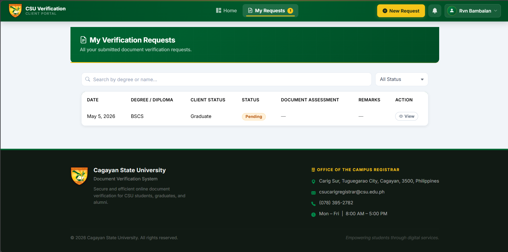
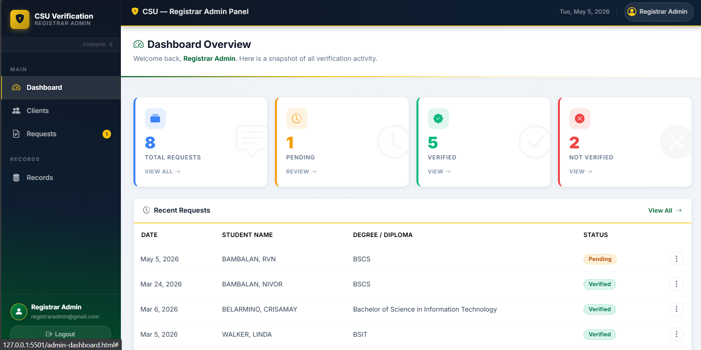
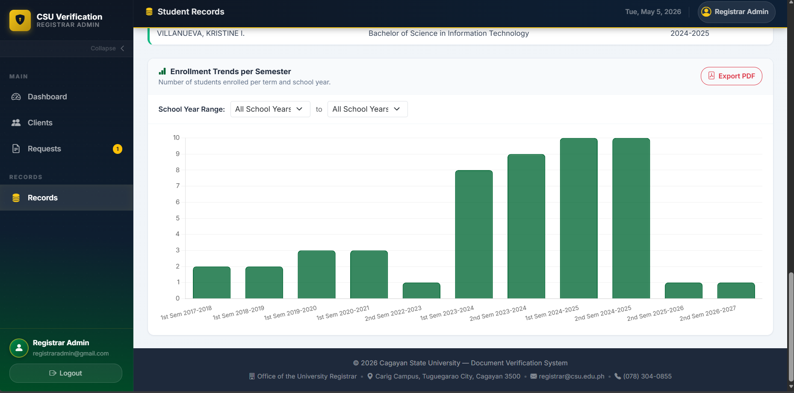

A real-time, role-based credential verification platform built with Supabase and vanilla JavaScript —
digitizing the registrar verification process of Cagayan State University – Carig Campus.

Challenge
Manual credential verification can be slow, repetitive, and difficult to track for alumni,
students, registrar staff, and third-party institutions.
Solution
I built a secure online portal where clients can submit requests, upload documents,
track status in real time, and receive official verification updates.
Outcome
The system centralizes requests, improves transparency, supports analytics,
and helps reduce processing time from days to hours.
Project Overview
The CSU Registrar Verification System is a full-stack web application developed for the
Cagayan State University – Carig Campus Registrar's Office. It digitizes the academic credential
verification process between alumni/students and registrar staff.
The system replaces traditional walk-in and email-based document verification workflows with a secure
online portal where clients can submit verification requests and track them in real time, while registrar
staff manage requests, student records, reports, and printable verification letters from one dashboard.
My Role
Full-stack developer responsible for building the client portal, admin dashboard, real-time status updates,
database integration, reports module, public verification page, and overall system interface.
Key Features
Client Portal
- Email/password sign-up and login
- Submit verification requests
- Upload TOR, Diploma, and Certificate of Grades
- Track request status in real time
- View admin remarks and document assessments
Admin Dashboard
- Review, filter, and search requests
- Approve or reject with remarks
- Manage student records
- Import records through CSV
- Export data and print verification letters
Reports & Analytics
- Auto-generated student counts
- Transferees, Dropouts, and Graduates reports
- Enrollment trends using Chart.js
- CSV export support
- Printable report outputs
Verification & Security
- Public verification page
- Verification code validation
- Audit log of admin actions
- Role-based access
- Private institutional access
Tech Stack
HTML
CSS
Vanilla JavaScript
Supabase
Supabase Realtime
Chart.js
CSV Processing
Project Screenshots
Since this is a private institutional project, I showcase selected screenshots only.
Sensitive student information, records, and internal data are hidden or blurred.

View Login Page
Login and authentication page

View Client Dashboard
Client dashboard with request status tracking

View Admin Dashboard
Admin dashboard for managing verification requests

View Reports Module
Reports and enrollment analytics module
Impact
- Helps reduce credential verification processing time from days to hours
- Gives clients real-time visibility into their request status
- Centralizes student records and registrar workflows
- Provides enrollment analytics and report generation
- Generates official, printable, code-verified letters
Status: Active Development / Private Institutional Project
Privacy Note: This system is privately maintained for institutional use.
Public source code and live system access are restricted.